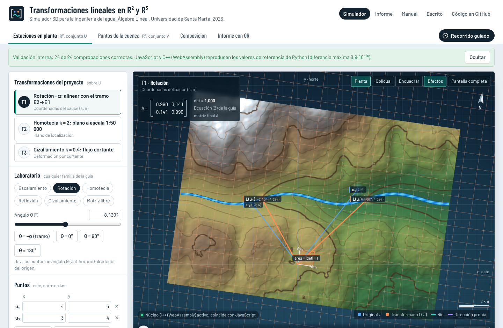
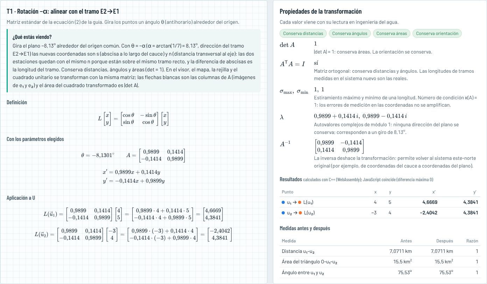
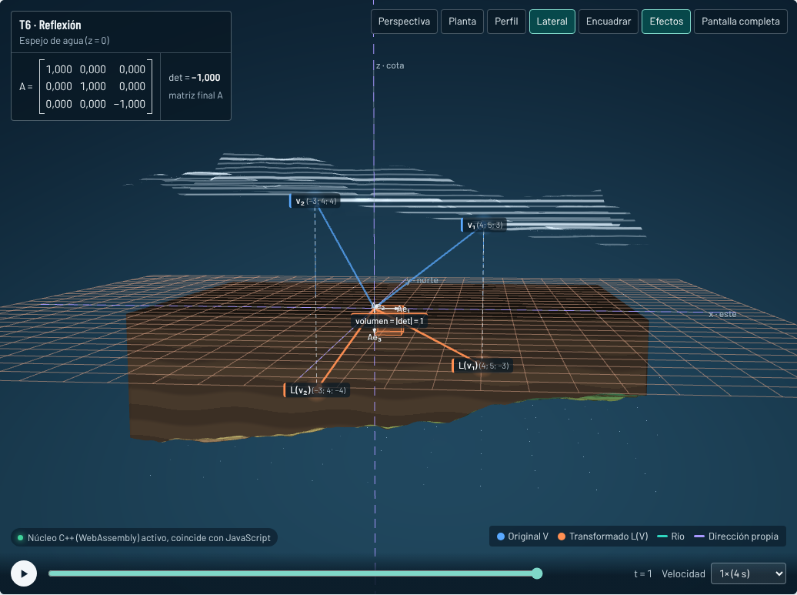
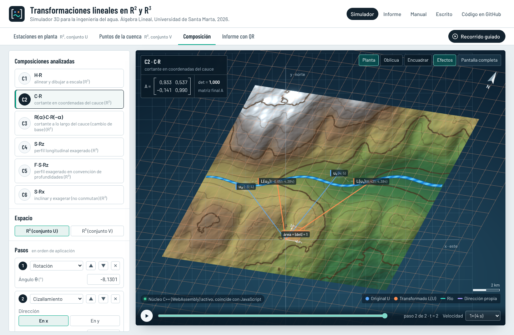
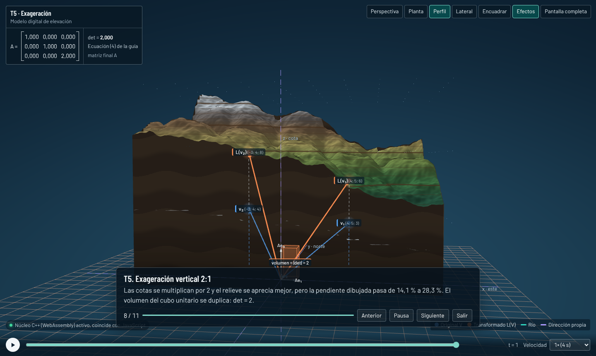

Manual de usuario
Manual de usuario del simulador 3D de transformaciones lineales en R² y R³
Para qué sirve el simulador
El simulador desarrolla el proyecto de Álgebra Lineal del Programa de Ingeniería del Agua: aplica transformaciones lineales a dos estaciones hidrométricas en planta (conjunto U, en R²) y a dos puntos de una cuenca con su cota (conjunto V, en R³), muestra la matriz de cada transformación con su desarrollo paso a paso y explica, con lenguaje de ingeniería del agua, qué conserva y qué modifica cada una. Incluye las seis transformaciones del proyecto (T1 a T6), un laboratorio con todas las familias de la guía, un módulo de composición y un generador de informes con código QR.
Resumen rápido. Elija una transformación en el panel izquierdo, observe la animación en el visor y lea abajo la matriz, el producto paso a paso y las propiedades. Para entregar resultados, use la pestaña «Informe con QR».
Cómo abrirlo
En línea
Abra la dirección https://apandrespenaloza.github.io/PROYECTOS_DE_ALGEBRA_LINEAL_Programa_de-Ingenieria_del_Agua_y_Desarrollo_Sostenible/ en un navegador actualizado (Chrome, Edge, Firefox o Safari) o escanee el código QR de la portada. No necesita instalar nada ni crear una cuenta. El simulador funciona en computadores, tabletas y teléfonos; en pantallas pequeñas el visor aparece arriba y los controles debajo.
Sin conexión
- Descargue el repositorio desde https://github.com/APAndresPenaloza/PROYECTOS_DE_ALGEBRA_LINEAL_Programa_de-Ingenieria_del_Agua_y_Desarrollo_Sostenible con Code → Download ZIP.
- Descomprima el archivo y abra
index.htmlcon el navegador. - Todo funciona igual: las bibliotecas, las fuentes y el núcleo C++ (incrustado en
js/wasm/motor-wasm-datos.js) están incluidos. Los códigos QR siempre apuntan a la dirección pública del sitio.
Requisitos
El visor usa WebGL. Si aparece en blanco, active la aceleración por hardware del navegador (en Chrome: Configuración → Sistema → Usar aceleración de gráficos). En equipos lentos, desactive el botón «Efectos» del visor.
La pantalla principal
Figura 1Pantalla principal del simulador

La pantalla tiene seis zonas (Figura 1):
- Cabecera: enlaces al simulador, al informe del proyecto, a este manual, al escrito y al código en GitHub.
- Pestañas: «Estaciones en planta» (R²), «Puntos de la cuenca» (R³), «Composición» e «Informe con QR». A la derecha, el botón «Recorrido guiado».
- Aviso de validación: al abrir la página, el simulador repite las seis transformaciones y las seis composiciones con sus dos motores de cálculo y las compara con los valores de referencia de Python. Si todo coincide, el aviso es verde.
- Panel de mando (izquierda): transformaciones del proyecto, laboratorio, puntos, capas y exportación.
- Visor (derecha): la vista 3D con el cajetín de la matriz, las herramientas de vista y la línea de tiempo.
- Panel de cálculo (abajo): ecuaciones, propiedades y resultados.
Módulo «Estaciones en planta» (R²)
Transformaciones del proyecto
Las tarjetas T1, T2 y T3 cargan las transformaciones desarrolladas en el informe y las animan desde la identidad:
Tabla 1Transformaciones del proyecto en R²
| Tarjeta | Transformación | Qué observar |
|---|---|---|
| T1 | Rotación −α, con α = arctan(1/7) ≈ 8,13° | Las dos estaciones quedan con el mismo n (4,3841 km) y la diferencia de abscisas es la longitud del tramo (7,0711 km). |
| T2 | Homotecia k = 2 (plano a escala 1:50 000) | Distancias ×2, áreas ×4 y ángulos iguales. |
| T3 | Cizallamiento en x, k = 0,4 (flujo cortante) | El área se conserva, la figura se inclina y la orilla (eje x) no se mueve. |
Laboratorio
Los botones de familia (Escalamiento, Rotación, Homotecia, Reflexión, Cizallamiento y Matriz libre) cambian la transformación. Cada parámetro tiene un campo numérico y un deslizador: al moverlos, la vista y los cálculos se actualizan al instante. Los campos aceptan coma o punto decimal. Los atajos fijan valores útiles, por ejemplo «θ = −α (tramo)» o «1:25 000». En «Matriz libre» se escriben directamente las entradas de la matriz.
Puntos
La tabla de puntos muestra U (o V en R³). Puede cambiar cualquier coordenada, añadir hasta doce puntos con «Añadir punto», quitar puntos con ✕ y volver a los datos de la guía con «Restaurar U de la guía».
Capas
Tabla 2Capas del visor
| Capa | Qué muestra |
|---|---|
| Mapa o bloque de la cuenca | El relieve con colores hipsométricos y curvas de nivel cada 250 m (más gruesas cada 1 km). Se transforma con la misma matriz. |
| Río | El cauce principal, que pasa por las dos estaciones. |
| Rejilla | La rejilla original (azul grisácea) y su imagen (naranja): muestra cómo se deforma todo el plano. |
| Cuadrado o cubo unitario | Su imagen tiene área o volumen igual a |det A|. |
| Vectores | Los vectores de posición de los puntos originales (azul) y de sus imágenes (naranja). |
| Trayectorias | El camino que recorre cada punto durante la animación. |
| Direcciones propias | Las rectas que la transformación no gira (autovectores reales), en violeta, al final de la animación. |
| Columnas de A | Las imágenes de e₁, e₂ y e₃ (flechas blancas). |
| Etiquetas | Los nombres y las coordenadas de los puntos. |
| Retícula del espacio (R³) | Puntos de una retícula 3D que se transforman con la matriz. |
| Relieve original (R³) | Las curvas de nivel del relieve sin transformar, en blanco. |
Exportar
«CSV» descarga la matriz, los puntos, sus imágenes y las medidas en un archivo que abre Excel (separador punto y coma, coma decimal). «JSON» descarga los mismos datos para otros programas. «Copiar enlace» copia una dirección que abre el simulador con exactamente los mismos valores.
El visor 3D
Cajetín de la matriz
En la esquina superior izquierda, un cajetín, como el rótulo de un plano, muestra la transformación, la matriz que se está aplicando y su determinante. Durante la animación la matriz se escribe A(t) y sus números cambian en vivo; al terminar, muestra la matriz final A.
Línea de tiempo
El botón ▶ anima la transformación desde la identidad (t = 0) hasta la matriz final (t = 1); durante la animación se convierte en pausa. El deslizador permite detenerse en cualquier instante. En una composición, t va de 0 al número de pasos y cada tramo anima un factor.
El selector «Velocidad», a la derecha de la línea de tiempo, controla cuánto dura cada animación. Entre paréntesis indica lo que tarda cada paso: 0,25× (16 s), 0,5× (8 s), 1× (4 s) y 2× (2 s). El simulador abre a 1×; para explicar una transformación en clase conviene 0,5× o 0,25×. El cambio se aplica de inmediato, incluso a mitad de una animación, viaja en el enlace reproducible y el navegador lo recuerda para la próxima visita. Si el sistema tiene activada la opción «reducir movimiento», las transformaciones se muestran sin animación.
Vistas y herramientas
Tabla 3Botones del visor
| Botón | Función |
|---|---|
| Planta | Vista desde arriba, con el norte hacia arriba, la rosa de los vientos y la escala gráfica. La rosa gira y se refleja con la transformación. |
| Oblicua (R²) | El mapa visto en perspectiva. |
| Perspectiva (R³) | Vista general del bloque de la cuenca. |
| Perfil (R³) | Vista perpendicular al tramo E2→E1: muestra el perfil longitudinal (recomendada para T5). |
| Lateral (R³) | Vista casi horizontal: muestra la reflexión respecto al plano xy (recomendada para T6). |
| Encuadrar | Ajusta la cámara para que quepan el dominio original y el transformado. |
| Efectos | Activa o desactiva el resplandor y el suavizado; desactívelo si el equipo es lento. |
| Pantalla completa | Muestra solo el visor. |
Mover la cámara
Tabla 4Controles de la cámara
| Acción | Ratón | Pantalla táctil |
|---|---|---|
| Girar (vistas 3D) | Arrastrar con el botón izquierdo | Arrastrar con un dedo |
| Desplazar | Arrastrar con el botón derecho | Arrastrar con dos dedos |
| Acercar o alejar | Rueda | Pellizcar |
Colores
Azul: conjunto original. Naranja: imagen. Aguamarina: el río. Violeta: direcciones propias. Blanco: columnas de la matriz. Los colores siguen una paleta verificada para personas con daltonismo, y cada elemento tiene además su etiqueta.
El panel de cálculo
Figura 2Panel de cálculo con la transformación T1

A la izquierda (Figura 2), sobre papel cuadriculado, el panel de ecuaciones muestra:
- ¿Qué estás viendo?: la interpretación de la transformación en ingeniería del agua con los parámetros actuales.
- Definición: la matriz estándar simbólica de la guía.
- Con los parámetros elegidos: la matriz numérica y las fórmulas por coordenadas.
- Aplicación a U o V: el producto A·p paso a paso para cada punto.
A la derecha, el panel de propiedades indica qué conserva y qué modifica la transformación y explica el determinante, la ortogonalidad, los valores singulares (estiramiento máximo y mínimo y número de condición), los autovalores y la inversa. La tabla de resultados se calcula con el núcleo C++ compilado a WebAssembly y se comprueba con el motor JavaScript; debajo aparecen las medidas antes y después: distancia, área, ángulo y, en R³, pendiente.
Módulo «Puntos de la cuenca» (R³)
Funciona igual que el módulo de R², con el conjunto V y el relieve presentado como un bloque diagrama. Las tarjetas son T4 (rotación alrededor de z), T5 (exageración vertical 2:1) y T6 (reflexión respecto al plano xy). La vista cambia sola a la más adecuada: perspectiva para T4, perfil para T5 y lateral para T6.
Figura 3Transformación T6 vista desde la vista lateral

Nota. El bloque reflejado queda bajo el plano z = 0 y las curvas blancas muestran el relieve original.
Módulo «Composición»
Figura 4Módulo «Composición» con C2

- Elija una de las composiciones analizadas (C1 a C6) o arme la suya.
- En «Espacio», elija R² (conjunto U) o R³ (conjunto V).
- En «Pasos», cambie la familia y los parámetros de cada paso; súbalo (▲), bájelo (▼) o quítelo (✕). «Añadir paso» agrega uno nuevo (hasta ocho).
- «Invertir el orden» aplica los pasos al revés: compare los resultados.
- «Animar paso a paso» recorre la composición; la línea de tiempo muestra en qué paso va.
El panel «¿Importa el orden?» compara la matriz M de la composición con la matriz M′ del orden inverso, dice si conmutan y muestra las imágenes de los puntos en ambos órdenes (Figura 4).
Informe con QR
Figura 5Pestaña «Informe con QR»

- Escriba el título, los autores, el curso, la fecha y sus observaciones.
- Marque las transformaciones (T1 a T6) y las composiciones que quiere incluir, y si desea el escenario actual, el desarrollo paso a paso, las propiedades y las capturas del visor.
- Elija qué abre el código QR: la simulación con los valores actuales (recomendado), la página principal, el informe, el manual, el escrito u otra dirección.
- Pulse «Imprimir o guardar PDF» y elija «Guardar como PDF» en el diálogo de impresión, o «Descargar informe (HTML)» para obtener un archivo que se abre en cualquier navegador.
Privacidad: todo se calcula y se genera en el navegador. El código QR contiene solo la dirección y los valores numéricos de la simulación, no el nombre de los autores ni las observaciones.
Recorrido guiado y video del proyecto
Figura 6Recorrido guiado a pantalla completa

La guía del proyecto pide un video que muestre cómo se desarrollaron las transformaciones. El botón «Recorrido guiado» presenta a pantalla completa, con subtítulos, once pasos: los datos de la guía, T1 a T6 y dos composiciones (Figura 6). A velocidad 1× dura 2 minutos y 12 segundos; cada paso dura lo que tarda su animación más un tiempo de lectura, de modo que el recorrido se alarga a 0,5× (2 minutos y 56 segundos) y se acorta a 2×. La velocidad puede cambiarse durante el recorrido.
Tabla 5Teclas del recorrido guiado
| Tecla | Acción |
|---|---|
| → | Paso siguiente |
| ← | Paso anterior |
| Barra espaciadora | Pausa o continuar |
| Esc | Salir del recorrido |
Para grabar el video: inicie una grabación de pantalla (en Windows, Win + Alt + R con la Barra de juegos; en macOS, Mayús + Cmd + 5; en cualquier sistema, OBS Studio), pulse «Recorrido guiado» y narre cada paso. El repositorio incluye documentos/video_recorrido.mp4, una grabación del recorrido sin narración que puede usar como base.
Enlaces reproducibles
El escenario completo se guarda en el fragmento de la dirección (lo que va después de #), que el navegador no envía al servidor. Un enlace es la dirección del sitio (véase «Cómo abrirlo») seguida de un fragmento como estos:
#sim=1&m=r2&t=T1 T1 sobre el conjunto U
#sim=1&m=r3&f=esc3&p=1,1,3 escalamiento (1, 1, 3) sobre V
#sim=1&m=comp&k=C2 composición C2
#sim=1&m=r2&f=rot2&p=30&u=4,5;-3,4;0,6 rotación de 30° con un tercer punto (0, 6)
#sim=1&m=comp&k=C5&vel=0.5 composición C5 a velocidad 0,5×m es el módulo (r2, r3 o comp); t, una transformación del proyecto; f y p, una familia del laboratorio y sus parámetros; u o v, los puntos; k, una composición analizada; vel, la velocidad de la animación (0.25, 0.5 o 2; se omite cuando es 1×). Al abrir un enlace, el simulador valida cada campo, carga el escenario y muestra un aviso con el botón «Volver a los casos base».
Scripts de Python
La guía pide los archivos .py de cada transformación. Están en la carpeta python/ y requieren Python 3.10 o posterior con NumPy y Matplotlib:
pip install -r python/requirements.txt
cd python
python T1_rotacion_cauce.py # T1; también: --alfa 30
python T2_homotecia_plano.py # T2; también: --escala 25000
python T3_cizallamiento_flujo.py # T3; también: --dudy 0.05 --dt 6
python T4_rotacion_cuenca.py # T4; también: --theta -30
python T5_exageracion_vertical.py # T5; también: --sz 3
python T6_reflexion_superficie.py # T6; también: --plano xz
python composicion.py # composiciones C1–C6
python generar_todo.py # todo lo anterior y la validación cruzada
python validacion_cruzada.py # compara Python, C++ y JavaScriptCada script imprime el desarrollo completo (matriz, productos paso a paso, propiedades, medidas e interpretación) y guarda su figura en img/python/. validacion_cruzada.py necesita además un compilador de C++ y Node.js.
Núcleo C++
El núcleo de cálculo está en cpp/ y no depende de ninguna biblioteca, ni siquiera de la estándar, para poder compilarse a WebAssembly:
cd cpp
make # programa nativo ./motor y datos/resultados_cpp.json
make pruebas # 353 pruebas unitarias
make wasm # wasm/motor_transformaciones.wasm (requiere clang con destino wasm32)Las pruebas del motor JavaScript y del módulo WebAssembly se ejecutan con node pruebas/motores.test.js.
Solución de problemas
Tabla 6Problemas frecuentes
| Problema | Causa probable | Solución |
|---|---|---|
| El visor aparece en blanco | WebGL desactivado | Active la aceleración por hardware o pruebe otro navegador. |
| La animación va lenta | Equipo sin tarjeta gráfica dedicada | Desactive «Efectos» y la capa «Retícula del espacio». |
| El aviso dice «Motor JavaScript (WebAssembly no disponible)» | Navegador muy antiguo o política de seguridad | Los resultados siguen siendo correctos con el motor JavaScript; actualice el navegador para usar el núcleo C++. |
| El QR abre otra dirección | Copia publicada con otro nombre | Corrija la «Dirección pública del simulador» en la pestaña «Informe con QR». |
| Un campo se pone rojo | Valor no numérico | Escriba un número; se aceptan coma y punto decimal. |
| Las ecuaciones se ven sin formato al abrir sin conexión | El navegador bloquea las fuentes locales | Abra el sitio en línea o sirva la carpeta con python -m http.server. |
Publicar una copia propia
- Haga un fork del repositorio en GitHub.
- En Settings → Pages, elija Deploy from a branch, rama
mainy carpeta/ (root). - El sitio quedará en
https://<usuario>.github.io/<repositorio>/; los códigos QR que genere el simulador usarán esa dirección automáticamente.